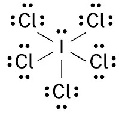
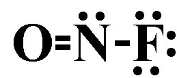

1) Which of the following shows the best Lewis structure for ICl5?
A)
B)
C) *
D)
I has 7 valence electrons, and Cl has 7 valence electrons. I can get more than an octet because it is below the 2nd period. Chlorine will only get an octet because it is not the central atom. The formal charges need to be as close to zero as possible. is the only structure that contains the correct number of electrons (7 x 6 = 42) where all the formal charges are zero.
2) Place the following bonds in order of decreasing dipole moment.
Si-P Si-Cl Si-S
A) Si-Cl > Si-S > Si-P
B) Si-P > Si-S > Si-Cl
C) Si-Cl > Si-P > Si-S*
D) Si-P > Si-Cl > Si-S
The bond with the lowest dipole moment will be the between elements closest on the periodic table. Since Si and P are the closest on the periodic table, they will have the lowest dipole moment. Since Si and S are the next closest, they will have the second to lowest dipole moment. Si and Cl are the furthest on the periodic table, so they will have the largest dipole moment.
3) Which of the following shows the best Lewis structure for CH3OH?
A)
B)
C) *
D)
4) Identify the longest bond.
A) Triple covalent bond
B) Single covalent bond*
C) Double covalent bond
D) All bonds are the same length
Triple bonds are stronger than double bonds, which are stronger than single bonds.
5) Which of the following bonds is most polar?
A) HBr
B) H-F*
C) H-I
D) HCl
The most polar bond will be the one with the largest dipole moment.
The largest dipole moment will be between the two elements that have the largest difference in electronegativity. Generally speaking the elements with the largest difference in electronegativity will be furthest on the periodic table. However, you should remember that hydrogen has an electronegativity that is around that of metalloids. In other words, it is low for a nonmetal.
6) Which compound has the smallest dipole moment in the gas phase?
A) CO
B) LiF
C) Cl2*
D) HCl
The smallest dipole moment will be between the two elements that have the smallest difference in electronegativity. Generally speaking the elements with the smallest difference in electronegativity will be closest on the periodic table. However, you should remember that hydrogen has an electronegativity that is around that of metalloids. In other words, it is low for a nonmetal.
7) Which of the following shows the best Lewis structure for BH3?
A)
B)
C)
D) *
8) Which of the following shows the best Lewis structure for OCl2?
A)
B) *
C)
D)
Oxygen has 6 valence electrons and chlorine has 7 valence electrons. Both oxygen and chlorine must have an octet. is the only structure with the correct number of electrons (6 + 7 + 7 = 20), where both oxygen and chlorine have an octet.
9) Which of the following shows the best Lewis structure for N2H4?
A)
B)
C)
D) *
10) Which of the following elements is the most electronegative.
A) Rubidium
B) Chlorine*
C) Sodium
D) Iodine
The trend for electronegativity is that it increases as you go up and to the right on the periodic table. However, noble gasses have an electronegativity of approximately zero, so fluorine has the highest electronegativity. Thus in this case, chlorine is the most electronegative.
11) Which of the following shows the best Lewis structure for NOF?
A)
B) 
C) *
D)
12) A double covalent bond contains how many electrons?
A) 5
B) 6
C) 4*
D) 2
A single covalent bond contains 2 shared electrons. A double covalent bond contains 4 shared electrons. A triple covalent bond contains 6 shared electrons.
13) Identify the number of electron groups (electron domains) around a molecule with sp2 hybridization.
A) 3*
B) 4
C) 5
D) 6
# Electron domains
Hybridization
2
sp
3
sp2
4
sp3
5
sp3d
6
sp3d2
14) Use the molecular orbital diagram shown below to determine which of the following are the MOST stable.
A) NeF+
B) OF2-
C) F22+*
D) O2-
Step 1: Count the number of valence electrons in the molecule. F22+: 12 valence electrons O2-: 13 valence electrons NeF+: 14 valence electrons OF2-: 15 valence electrons Step 2: Fill in the molecular orbital diagram from the bottom up, but make sure to follow Hund's rule (one electron in each orbital in degenerate orbitals before a second with an opposing spin) when filling pi molecular orbitals. Step 3: Determine the bond order. Since after 10 valence electrons, the rest go into anti-bonding orbitals, the lowest number of electrons will have the highest bond order. Bond order = (electrons in bonding orbitals - electrons in antibonding orbitals)/2 Bond order for F22+: (8-4)/2 = 2 Bond order for O2-: (8-5)/2 = 1.5 Bond order for NeF+: (8-6)/2 = 1 Bond order for OF2-: (8-7)/2 = 0.5 Since F22+ has the highest bond order, it will be the MOST stable.
15) What is the VSEPR shape (electron domain geometry) of BH3?
A) Trigonal planar*
B) Tetrahedral
C) Linear
D) Bent
The Lewis structure for BH3 has 3 electron domains, so the VSEPR shape (electron domain geometry) of BH3 is trigonal planar.
16) What is the molecular shape of XeF4?
A) Square planar*
B) Square pyramidal
C) Octahedral
D) See saw (saw horse)
Since the Lewis structure of XeF4 has 6 electron domains, 2 of which are lone pairs, the molecular shape of XeF4 is square planar.
17) What is the molecular shape of SiO2?
A) Linear*
B) Trigonal planar
C) bent
D) Tetrahedral
Since the Lewis structure of SiO2 has 2 electron domains, none of which are lone pairs, the molecular shape of SiO2 is linear.
18) Give the molecular shape for XeF6
A) Trigonal planar
B) Octahedral*
C) Trigonal bipyramid
D) Square planar
Step 1: Draw the Lewis Structure. Step 2: Count the number of electron domains: the number of lone pairs and number of atoms bonded to Xe. You should get 6 electron domains, of which 0 are lone pairs. 6 electron domains and 0 are lone pairs corresponds to an octahedral molecular shape.
19) What is the VSEPR shape (electron domain geometry) of PH3?
A) Tetrahedral*
B) Bent
C) Trigonal planar
D) Linear
Since the Lewis structure of PH3 has 4 electron domains, the VSEPR shape (electron domain geometry) of PH3 is tetrahedral.
20) What is the VSEPR shape (electron domain geometry) of CH4?
A) Linear
B) Bent
C) Tetrahedral*
D) Trigonal planar
Since the Lewis structure of CH4 has 4 electron domains, the VSEPR shape (electron domain geometry) of CH4 is tetrahedral.
21) Which of the following compounds is nonpolar?
A) PH2F
B) SiS2*
C) NHO
D) IF5
SiS2 is linear shaped, which is a symmetrical shape. That means the sulfurs electronegativities will balance out and SiS2 will be nonpolar.
22) What is the molecular shape of ClF3?
A) See saw (saw horse)
B) Octahedral
C) T-shape*
D) Trigonal bipyramidal
Since the Lewis structureof ClF3 has 5 electron domains, two of which are lone pairs, the molecular shape of ClF3 is T-shaped.
23) Use the molecular orbital diagram shown below to determine which of the following are the MOST stable.
A) B2-
B) NC+
C) C22-*
D) BC2-
Step 1: Count the number of valence electrons in the molecule. B2-: 7 valence electrons NC+: 8 valence electrons BC2-: 9 valence electrons C22-: 10 valence electrons Step 2: Fill in the molecular orbital diagram from the bottom up, but make sure to follow Hund's rule (one electron in each orbital in degenerate orbitals before a second with an opposing spin) when filling pi molecular orbitals. Step 3: Determine the bond order. Since after 4 valence electrons, the rest go into bonding orbitals, the highest number of electrons will have the highest bond order. Bond order = (electrons in bonding orbitals - electrons in antibonding orbitals)/2 Bond order for B2-: (5-2)/2 = 1.5 Bond order for NC+: (6-2)/2 = 2 Bond order for BC2-: (7-2)/2 = 2.5 Bond order for C22-: (8-2)/2 = 3 Since C22- has the highest bond order, it will be the MOST stable.
24) Is BH3 polar or nonpolar?
A) Polar
B) Nonpolar*
Since BH3 is trigonal planar (which is a symmetrical shape), the electronegativities of the three hydrogens balance out and BH3 is nonpolar.
25) How many grams of KNO3 will react with 196 grams of H2CO3?
2 KNO3 + H2CO3 ➞ K2CO3 + 2 HNO3
A) 160. g
B) 60.1 g
C) 639 g*
D) 60.1 g
To determine the grams of KNO3 that will react with 196 grams of H2CO3, we need to convert the given mass of H2CO3 to moles and then use the balanced chemical equation to determine the stoichiometric ratio.
First, we calculate the moles of H2CO3: Molar mass of H2CO3 = 2(1.01 g/mol of H) + 12.01 g/mol of C + 3(16.00 g/mol of O) = 62.03 g/mol Moles of H2CO3 = Mass of H2CO3 / Molar mass of H2CO3 Moles of H2CO3 = 196 g / 62.03 g/mol Moles of H2CO3 ≈ 3.16 moles
From the balanced chemical equation: 2 KNO3 + H2CO3 ➞ K2CO3 + 2 HNO3
The stoichiometric ratio between H2CO3 and KNO3 is 1:2. This means that 1 mole of H2CO3 will react with 2 moles of KNO3.
Therefore, the moles of KNO3 that will react with 196 moles of H2CO3 is:
Moles of KNO3 = 2 × Moles of H2CO3
Moles of KNO3 = 2 × 3.16 moles Moles of KNO3 ≈ 6.32 moles
Finally, we calculate the grams of KNO3 using its molar mass: Molar mass of KNO3 = 39.10 g/mol + 14.01 g/mol + 3(16.00 g/mol) = 101.10 g/mol Grams of KNO3 = Moles of KNO3 × Molar mass of KNO3 Grams of KNO3 = 6.32 moles × 101.10 g/mol Grams of KNO3 ≈ 639 g
26) What is the theoretical yield, in grams of CO2, from the reaction of 4.43 moles of C3H8 with 40.0 moles of O2?
C3H8 + 5 O2 ➞ 3 CO2 + 4 H2O
A) 585 g*
B) 1060 g
C) 13.3 g
D) 65.0 g
To determine the theoretical yield of CO2 in grams, we need to calculate the stoichiometric ratio between C3H2 and CO2 in the balanced chemical equation. The stoichiometric ratio is the ratio of moles of reactants and products involved in the reaction.
From the balanced equation: 1 mole of C3H8 reacts to produce 3 moles of CO2.
Given: Number of moles of C3H8 = 4.43 mol Number of moles of O2 = 40.0 mol
We will use the stoichiometry to determine the maximum number of grams of CO2 we could produce assuming each reactant was the limiting reactant:
Assuming C3H8 is the limiting reactant: Number of grams of CO2 = (4.43 mol C3H8) × (3 mol CO2 / 1 mol C3H8) x (44.01 g CO2 / 1 mol CO2) = 585 g CO2
Assuming O2 is the limiting reactant: Number of grams of CO2 = (40.0 mol O2) × (3 mol CO2 / 5 mol C3H8) x (44.01 g CO2 / 1 mol CO2) = 1060 g CO2
Since C3H8 produces fewer grams of our reactant, the theoretical yield is 585 g CO2
27) What is the limiting reactant when 13.2 moles of ZnS react with 10.3 moles of AlP?
3 ZnS + 2 AlP ➞ Zn3P2 + Al2S3
A) Zn3P2
B) AlP
C) ZnS*
D) Al2S3
To determine the limiting reactant, we need to compare the moles of each product we could produce from the moles of each reactant, assuming the other reactant is in excess. The reactant that produces fewer moles of product will be the limiting reactant.
From the balanced equation: 3 ZnS + 2 AlP ➞ Zn3P2 + Al2S3
The stoichiometric ratio between ZnS and AlP is 3:2. This means that 3 moles of ZnS react with 2 moles of AlP.
Moles of ZnS = 13.2 moles Moles of AlP = 10.3 moles
To determine the limiting reactant, we compare the moles of product we could produce from each reactant. Mols of Zn3P2 assuming ZnS is our limiting reactant (assuming AlP is in excess): Moles of ZnS x (1 mol Zn3P2 / 3 mol ZnS) = 13.2 moles x (1 / 3) = 4.40 Moles of Zn3P2
Mols of Zn3P2 assuming AlP is our limiting reactant (assuming ZnS is in excess): Moles of AlP x (1 mol Zn3P2 / 2 mol ZnS) = 10.3 moles x (1 / 2) = 5.15 Moles of Zn3P2
Since assuming ZnS was our limiting reactant produced fewer moles of product, ZnS is the limiting reactant.
28) How many moles of FeBr3 can be formed from 3.82 moles of KBr? Assume an excess of Fe(OH)3.
3 KBr + Fe(OH)3 ➞ 3 KOH + FeBr3
A) 1.27 moles*
B) 3.82 moles
C) 376 moles
D) 11.5 moles
From the balanced chemical equation: 3 KBr + Fe(OH)3 ➞ 3 KOH + FeBr3
We can see that the stoichiometric ratio between KBr and FeBr3 is 3:1. This means that for every 3 moles of KBr, we can expect 1 mole of FeBr3 to be formed.
Given that we have 3.82 moles of KBr, we can calculate the moles of FeBr3 using the stoichiometric ratio:
Moles of FeBr3 = (3.82 moles of KBr) / (3 moles of KBr per 1 mole of FeBr3) Moles of FeBr3 = 3.82 moles / 3 Moles of FeBr3 = 1.27 moles
29) The statement "in a chemical reaction matter is neither created nor destroyed" belongs to:
A) The Law of Multiple Proportions
B) The Law of Conservation of Mass*
C) The Law of Definite Proportions
D) Dalton's Atomic Theory
Dalton's Atomic Theory: Matter is composed of small indestructible particles.
The Law of Conservation of Mass: In a chemical reaction, matter is neither created nor destroyed.
The Law of Multiple Proportions: If two elements form more than one compound, the ratios of the masses of the second element that combine with a fixed mass of the first element will always be ratios of small whole numbers.
The Law of Definite Proportions: Samples of a compound will always contain the same proportion of elements by mass.
30) An unknown compound contains only carbon and hydrogen. When it undergoes combustion analysis, it produces 28.614 g of CO2 and 23.450 g of H2O. Given that it has a molar mass of 16.0 g/mol, what is the molecular formula?
A) C1H4*
B) C0.5H2
C) C1H11
D) C1H2
Step 1: Convert the grams of CO2 and H2O to moles of C and O. 28.6 g CO2 x \( \frac{1 mol CO_2}{44.01 g CO_2} \)x \( \frac{1 mol C}{1 mol CO_2} \) = 0.650 mol C 23.5 g H2O x \( \frac{1 mol H_2O}{18.016 g H_2O} \) x \( \frac{2 mol H}{1 mol H_2O} \) = 2.60 mol H
Step 2: Divide both mole amounts by the lower of the two numbers. 0.650 mol C/0.650 = 1.00 mol C 2.60 mol H/0.650 = 4.00 mol H
Step 3: Get the smallest whole number ratio of each mole amount to get the empirical formula.
Step 4: Calculate the molar mass of the empirical and dived the molar mass of the compound by the molar mass of the empirical formula. This number will tell you what you need to multiply the subscripts in the empirical formula by to get the molecular formula.
Thus the molecular formula is: C1H4
31) How many grams of LiF can be formed from 2.68 moles of BF3? Assume an excess of Li2SO3.
2 BF3 + 3 Li2SO3 ➞ B2(SO3)3 + 6 LiF
A) 0.310 g
B) 23.2 g
C) 3.08 g
D) 209 g*
To determine the grams of LiF formed from 2.68 moles of BF3, we need to use the balanced equation and the molar masses of the compounds involved.
From the balanced equation: 2 BF3 + 3 Li2SO3 ➞ B2(SO3)3 + 6 LiF
Using the stoichiometric ratio between BF3 and LiF (from the balanced equation), we find: 2 moles of BF3 produce 6 moles of LiF.
Now, we can calculate the mass of LiF: Molar mass of LiF: Li: 6.941 g/mol F: 18.998 g/mol (one F atom) Total molar mass of LiF: 6.941 + 18.998 = 25.939 g/mol
Mass of LiF = Moles of LiF × Molar mass of LiF = 8.04 moles × 25.939 g/mol = 209 g
Step 1) First balance the hydrogen on each sides by finding the least common multiple of8 and 2. Step 2) Next balance the carbon on each side. Step 3) Finally balance the oxygen last (because it exists in its elemental form unbound to other atoms). If needed, first double all the other coefficients.